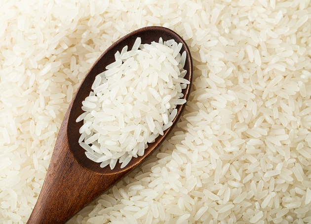

Rice recipe

Here's how to make rice
You are going to learn to cook rice. It's easy, and very practical, making it a great option for daily routine.
Ingredients
- Rice
- Olive oil
- Salt
- Water
- Add everything but the water on the pot and cook for about a minute
- Add the water and wait until it dries
- You can eat it now!